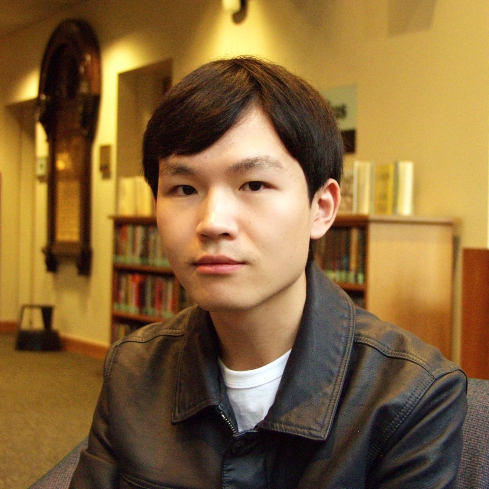
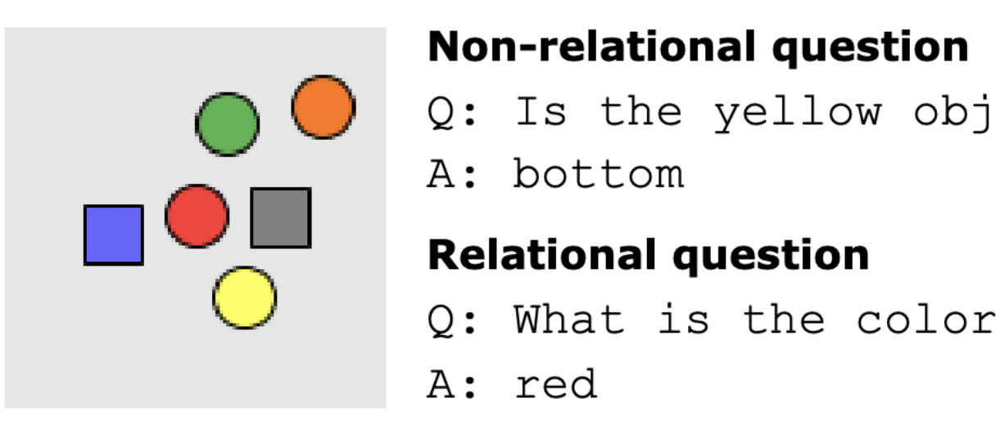
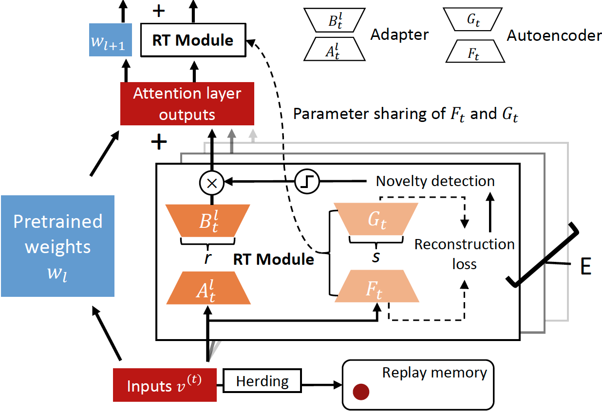
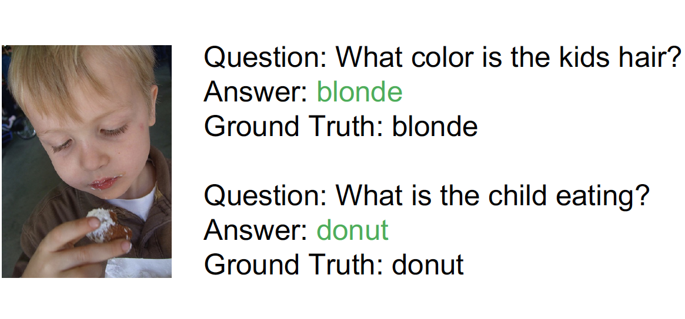
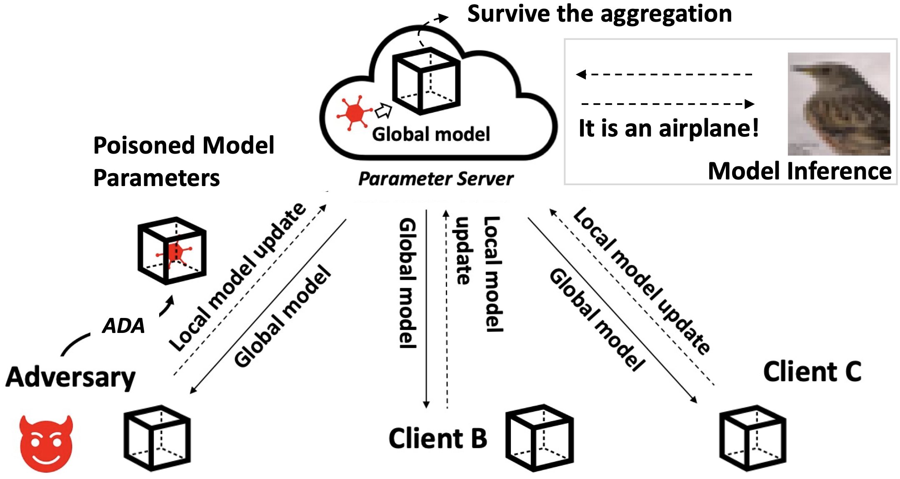
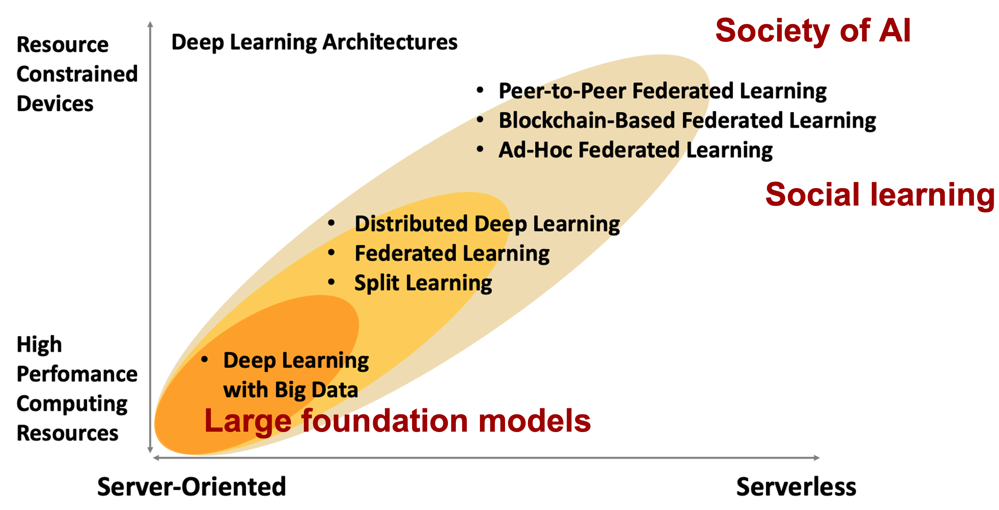
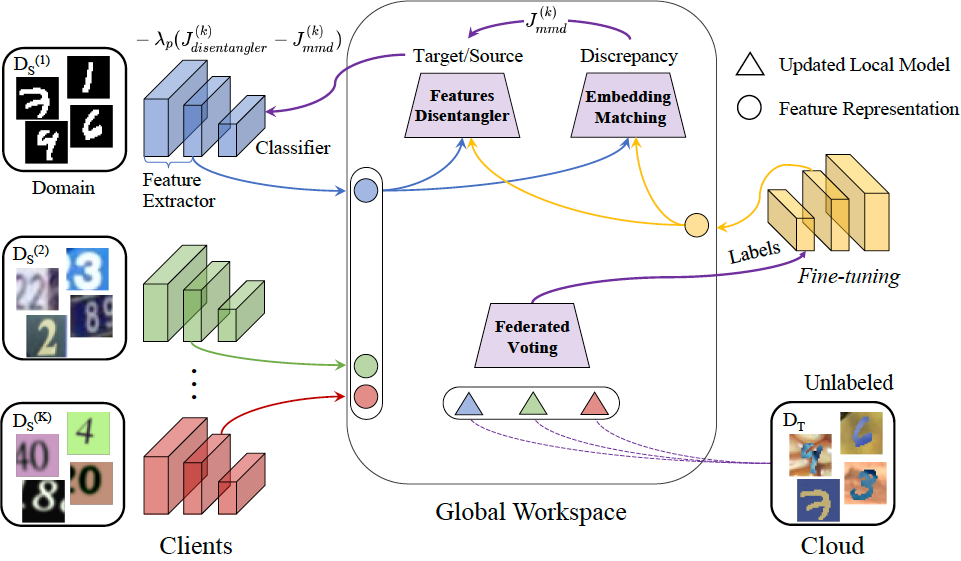
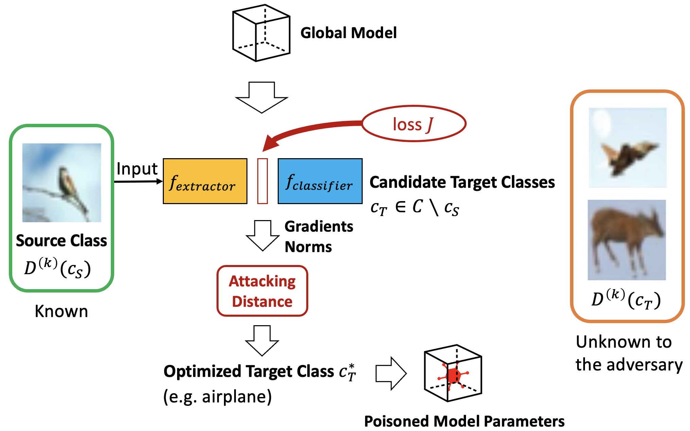
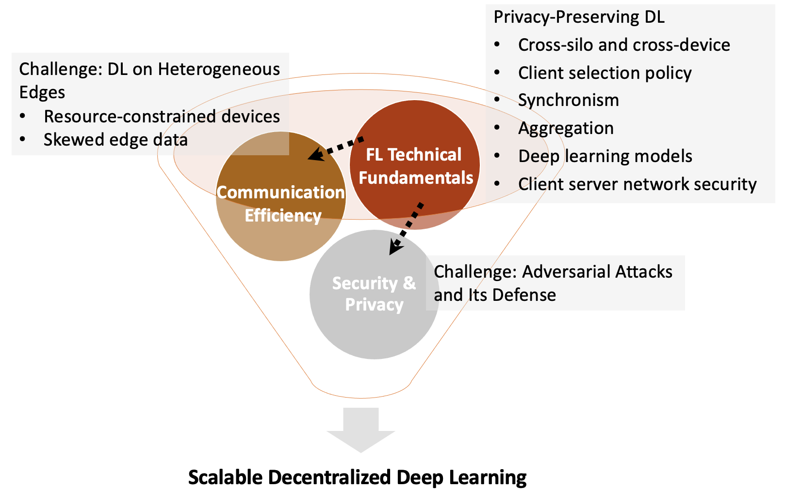
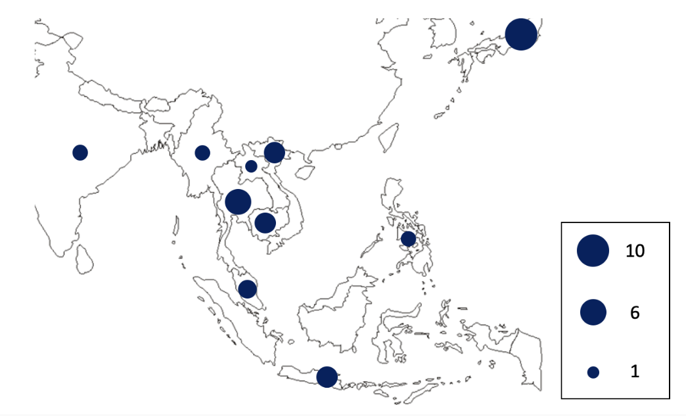

Yuwei Sun
My research interests revolve around the co-learning mechanism of decentralized and modular neural networks with Minsky's Society of Mind as a guide. My focus is on how knowledge learned by different agents or modalities could be transferred and leveraged to tackle future tasks. Understanding these dynamics would help build generalizable lifelong learning machines. Blog: The Modular Mind Blog
Email: sunyuwei [at] sais.com.cn |
 |
| News |
Aug 2024: I gave a talk at the RIKEN AIP – SJTU CS Joint Workshop on Machine Learning and Brain-like Intelligence.
Feb 2024: I am presenting our paper at AAAI 2024 in Vancouver.
Feb 2024: I successfully defended my PhD dissertation and received the Department Chair's Award.
Sep 2023: I am co-organizing the NeuroAI Social at NeurIPS 2023 in New Orleans.
May 2023: I was nominated for the WBAI Incentive Award for my work on AI and Global Workspace Theory.
Mar 2023: I was accepted by Microsoft Research Asia Collaborative Research Program (D-CORE 2023).
Mar 2023: I am excited to join Araya as a research intern working on NeuroAI and Global Workspace in April.
Mar 2023: I visited Switzerland and Germany for the joint ML workshops among RIKEN AIP, EPFL CIS, and Fraunhofer IIS.
Jan 2023: I attended AAAI 2023 and gave a talk on "Meta Learning in Decentralized Neural Networks: Towards More General AI".
Dec 2022: I presented our poster at NeurIPS 2022.
Oct 2021: I was selected as a fellow of the SPRING GX Program at the Japan Science and Technology Agency (JST).
Sep 2021: I was selected as a PhD research fellow (DC2) at the Japan Society for the Promotion of Science (JSPS).
Mar 2021: I received my Master's degree in Information and Communication Engineering with the honor of Department Chair's Award for Outstanding Thesis.
Jan 2020: I was accepted by the ASP fellowship at Massachusetts Institute of Technology (MIT).
| Biography |
| Selected Publications |
|  |
Associative Transformer
PDF | BibTex | Poster | Slides | Video |
|  |
Remembering Transformer for Continual Learning
PDF | BibTex | Poster |
|  |
Bidirectional Contrastive Split Learning for Visual Question Answering
PDF | BibTex | Poster | Slides | Video | Code |
|  |
Attacking Distance-aware Attack: Semi-targeted Model Poisoning on Federated Learning
2023 PDF | BibTex | Code |
|  |
Meta Learning in Decentralized Neural Networks: Towards More General AI
Mentor: Felipe Meneguzzi PDF | BibTex | Poster | Slides | Video |
|  |
Feature Distribution Matching for Federated Domain Generalization
PDF | BibTex | Code | Poster | Video |
|  |
Semi-Targeted Model Poisoning Attack on Federated Learning via Backward Error Analysis
PDF | BibTex | Code |
|  |
Decentralized Deep Learning for Multi-Access Edge Computing: A Survey on Communication Efficiency and Trustworthiness
PDF | BibTex | Resource |
|  |
Adaptive Intrusion Detection in the Networking of Large-Scale LANs with Segmented Federated Learning
PDF | BibTex | Video | Code |
| Talks |
| Academic Service |
| Awards and Honors |